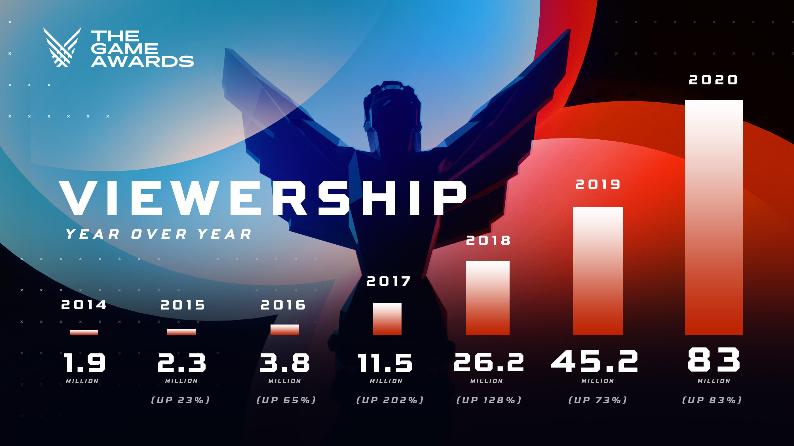

December 17, 2020
THE GAME AWARDS 2020 VIEWERSHIP INCREASES 84%
MORE THAN 83 MILLION LIVESTREAMS REAFFIRM VIDEO GAMES AS THE MOST POWERFUL FORCE IN GLOBAL ENTERTAINMENT
LOS ANGELES (Thursday, December 17) – The Game Awards, the video game industry’s year-end celebration, today announced its 2020 show set a new global record with more than 83 million livestreams, up more than 84% from last year’s 45.2 million livestreams. With appearances from Keanu Reeves, Brie Larson, Tom Holland, Gal Gadot, Christopher Nolan, John David Washington, and spectacular performances by Pearl Jam’s Eddie Vedder and the London Philharmonic Orchestra, conducted by Lorne Balfe, The Game Awards delivered double and triple digit increases across all major video, social and engagement metrics, including more than 8.3 million peak concurrent viewers globally.
With an all-digital, no friction approach to global distribution, The Game Awards aired live across more than 40 streaming networks around the world. On Twitch, the show reached a peak concurrent audience of more than 2.63M viewers, more than double last year, with a stunning 9,000 creators co-streaming the show, up 91% from 4,700 co-streamers in 2019. On YouTube, live viewership more than doubled, with the official livestream seeing an 84% YOY increase in peak concurrent viewers.
Globally, The Game Awards saw significant viewership growth in China on platforms such as Huya, Bilibili, and Douyin. In India, The Game Awards aired live on Disney+/Hotstar, MTV India, and other leading OTT services including JioTV, MX Player, Voot, and AirTel.
On Twitter, The Game Awards continued to dominate the conversation — with a 31% increase in conversation volume year over year, and unique authors up 65%, making this the most talked about Game Awards to date. The show trended #1 worldwide, with 12 of the 29 worldwide trends being about the show. In addition, thanks to the launch of a custom Branded Like, usage of #TheGameAwards on Twitter increased 107% YoY.
“In this most challenging of years, the video game industry has continued to deliver for its fans,” said Geoff Keighley, producer, The Game Awards. “We are deeply humbled to see that excitement translate into these record-setting results, with significant upticks in total viewership, watch time and social engagement around the world.”
On TheGameAwards.com, fan voting more than doubled — with a total of 18.3 million authenticated votes across the website and on Bilibili in China. In total, fan voting across all platforms was up more than 20% YOY.
The Game Awards gave fans a glimpse at what’s next in gaming with more than 30 world premieres of upcoming projects, in addition to breaking news on some of the most played games of the year including Among Us, Call of Duty Warzone, Fortnite and more. Sony’s The Last Of Us Part II won a total of seven awards, including Game of the Year, while Among Us took home the honors for Best Mobile and Best Multiplayer.
The Game Awards aired globally across more than 40 digital video networks including Twitch, YouTube, Twitter, Facebook Live, GameSpot, IGN, TikTok Live, and Steam. Internationally, the program aired on more than a dozen networks in China including Huya, DouYu, Bilibili, iQIYI, Zhanqi.tv, YouKu, Tencent QQ, NetEase CC, in India on Disney+/Hotstar, MTV, Jio TV, MX Player, Voot, and Airtel, as well as live distribution in Japan (NicoNico), Russia (VK), South East Asia (LangLive, Nimo TV), South Korea (Afreeca TV, Naver) and Brazil.
In partnership with Instagram, fans were able to create their own special TGAs moments with six unique augmented reality experiences – around Game of the Year nominees, Doom Eternal, Final Fantasy VII Remake, Ghost of Tsushima, Hades and The Last of Us Part II – that were able to be saved to their camera and shared to Instagram Stories or Reels. Fans watching The Game Awards on Twitch channels were also given exclusive Twitch Drops from Fortnite and Among Us.
This year also marked the second year of The Game Festival, a first-of-its-kind digital consumer event that brought the magic of hands-on gameplay demos to fans around the world. The Game Festival delivered over a dozen new game demos to fans, distributed via Steam on PC, Xbox on console, and Nvidia’s GeForce NOW for instant streaming with no downloads. The Game Festival builds on the success of The Game Awards Sale, which offered discounts on games across major platforms including PlayStation Store, Xbox, Steam, Nintendo eShop, and Epic Games Store.
The Game Awards also announced its inaugural Future Class list, composed of 50 talented individuals around the world who represent the bright, bold and inclusive future of video games. The Game Awards Future Class featured a diverse group of builders, thinkers and dreamers whose voices elevate and diversify the artform of gaming and whose passion makes the industry stronger.
The Game Awards is executive produced by Geoff Keighley and Kimmie Kim. LeRoy Bennett is creative director, and Rich Preuss is director.
# # #
About The Game Awards
Hailed as “the Oscars for gaming world” by the New York Times, The Game Awards is one of the largest live streamed events of the year on the Internet. The Game Awards brings together game creators, esports athletes, digital influencers, fans and Hollywood for a night of awards, exclusive game world premieres, new game announcements and musical performances that celebrate gaming as the most powerful, inspiring and immersive form of entertainment. The Awards airs live and free across more than 40 digital video networks including Twitch, YouTube, Twitter, Facebook, and globally in countries including China and India.
The Game Awards is guided by an advisory board that includes the executive leadership teams from Activision (Rob Kostich, President), AMD (Dr. Lisa Su, CEO), Electronic Arts (Laura Miele, Chief Studios Officer), Google (Phil Harrison, VP and GM, Stadia), Kojima Productions (Hideo Kojima), Microsoft (Phil Spencer, EVP of Gaming), Nintendo of America (Doug Bowser, President), Riot Games (Marc Merrill, Co-Chairman and Co-Founder), Rockstar Games, Sony Interactive Entertainment, Ubisoft (Yves Guillemot, CEO), Valve, Warner Bros. Games (David Haddad, President) and Tencent (Steven Ma, Senior Vice President).